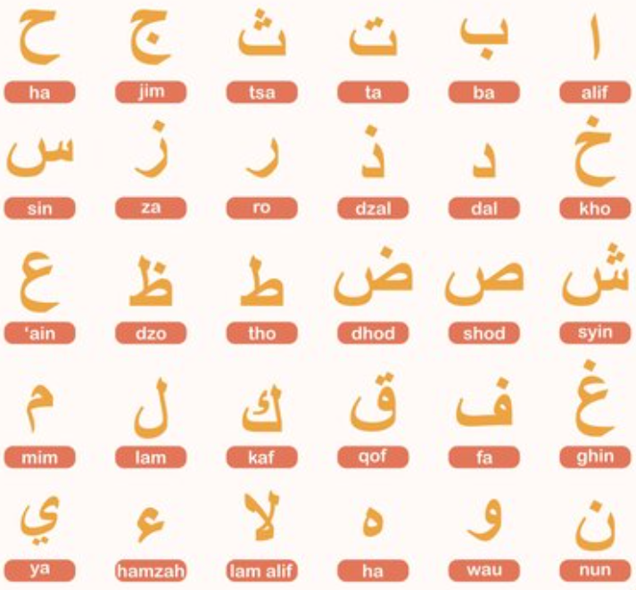
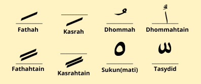

Huruf hijaiyah adalah huruf-huruf yang digunakan dalam
penulisan Al-Quran dan bahasa Arab. Huruf ini merupakan dasar
dari pembentukan kata dan kalimat dalam bahasa Arab. Huruf
hijaiyah memiliki aturan terminologi yang berbeda dari abjad
lain, dan ditulis dari kanan ke kiri.* Terdapat 30
huruf hijaiyah yang memiliki penulisan dan cara pembacaan yang
berbeda tergantung pada harakat dan tajwid.
* Sumber:
Arti huruf hijaiyah, Kumparan.com

Huruf hijaiyah memiliki perbedaan antara huruf yang dapat
disambung dengan huruf sebelum atau sesudahnya, dan huruf yang
tidak dapat disambung dengan huruf sesudahnya. Huruf hijaiyah
yang dapat disambung memiliki fleksibilitas dalam
penulisannya, sedangkan huruf hijaiyah yang tidak dapat
disambung tetap bisa disambung dengan huruf sebelumnya.
Tanda baca huruf hijaiyah memegang peran penting dalam
mempermudah pembacaan Al-Qur'an. Tanda-tanda ini memberikan
petunjuk yang jelas mengenai pelafalan dan pengucapan yang
benar untuk setiap huruf hijaiyah. Tanda baca huruf hijaiyah
disebut juga dengan istilah harakat
Sumber:
https://www.liputan6.com/lifestyle/read/4967910/tanda-baca-huruf-hijaiyah-disebut-ada-tujuh-simak-penjelasannya

Dengan memahami tanda baca huruf hijaiyah ini, umat Islam
dapat membaca Al-Qur'an dengan lafal yang benar dan memahami
makna ayat-ayatnya dengan lebih baik